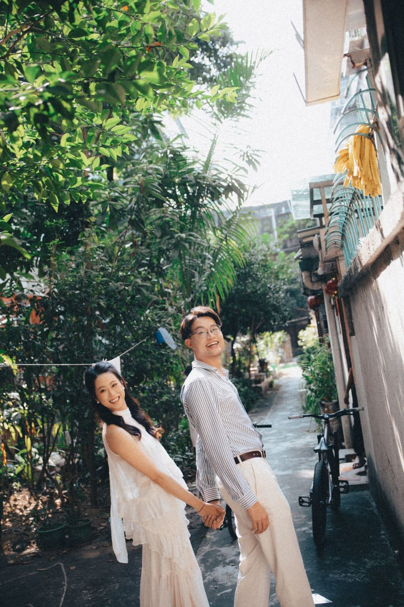
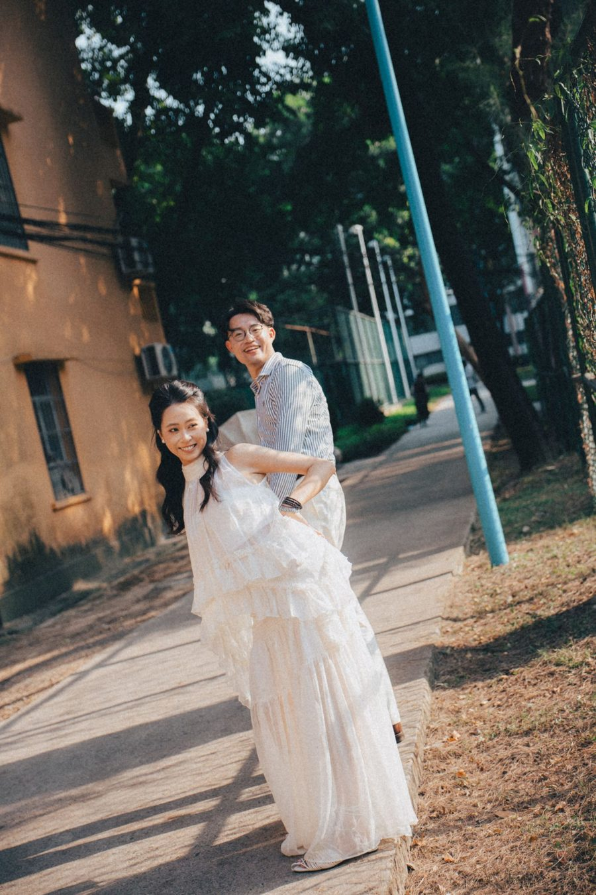
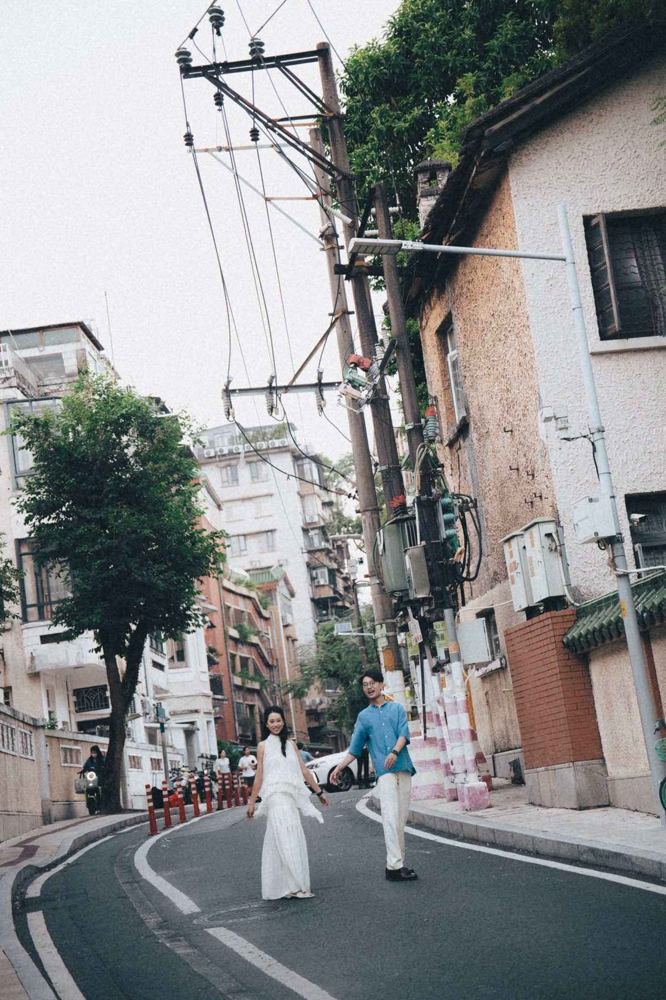

WEDDING BANQUET · 2027.05.15 · GUANGZHOU
one leap across the sky, to celebrate with you
十萬八千里。
羊城同見喜
Harry 與千條想請你來同聚。
11/30前 · 線上值機 →
Harry & 千條 敬邀
PORTRA 400 · 15 · 2027.05 · GZ0515
01 · THE MAP
命運自有地圖
而我們尋路至此
fate keeps its own map — and we found our way here
N
CAI · 開羅
尼羅河畔 · 相逢
CAN · 廣州
羊城 · 赴席
台中 · 大甲
鎮瀾宮
TYO · 東京
東京塔
Harry 的日常
≈ 9,000 KM · 一個筋斗
← 左右滑動看完整航線，點城市打開相冊 →
點地圖上的城市，共享在地記憶
CAI
開羅
尼羅河畔 · 相逢
收起 ×
2014 年，金字塔下，兩個志願者第一次見面。
CAI · 01
CAI · 02
CAI · 03
CAI · 04
TYO
東京
Harry 的日常
收起 ×
領隊出發與回來的地方，也是我們常常會合的城市。
TYO · 01
TYO · 02
TYO · 03
TYO · 04
CAN
廣州
羊城 · 赴席
收起 ×
2027.05.15，請你來這裡同我們食飯。


今日攜手，踏上全新冒險——
不怕迷路，不必完美，但求盡興；
風雨同舟，歲月無驚，山海慢慢。
以勇氣、篤定、責任，
兌換更廣闊的世界，與更大的自由。
CAI → TYO → CAN
Hand in hand, a new adventure — unafraid of getting lost, no need to be perfect, only to enjoy it all.
02 · BACK TO THE TABLE
翻山越海，
回到三餐四時
九千公里走過，最後落腳的，是尋常燈火，一日三餐。
after all the mountains and seas, we came home to the everyday
四時 · FOUR SEASONS

春
SPRING
夏
SUMMER
秋
AUTUMN
冬
WINTER
春
夏
秋
冬
春
櫻花落得慢，賽車跑得快。
Petals fall slowly. Race cars don’t.
夏
北回歸線上，一邊烈日，一邊驟雨。
Blazing sun on one side, sudden rain on the other.
秋
晨踏古道青苔，夜穿鋼鐵森林。
Mossy steps by morning, steel forest by night.
冬
雪落在野外，燈亮在桌前。從此，我們是家人。
Snow outside, a lamp within. From then on, family.
03 · CHECK-IN
我們在路上遇見彼此，
也一路有你們見證。
五月十五，請來聚氣同歡。
Your boarding pass is ready — check in below.
過嚟食飯航空
BOARDING PASS · 登機證
YOU
你的城市
CAN
廣州
PASSENGER
你
FLIGHT
GZ0515
DATE
15 MAY 2027
BOARDING
晚宴 · 待定
GATE
廣州 · 確認中
SEAT
頭等貴賓
飲咗未啊？
STUB · 存根
YOU →
CAN
FLIGHT
GZ0515
SEAT
1A
辦理值機 · 回覆出席 →
約 3 分鐘 · 11/30 前回覆
延伸旅遊行程 · 廣州 / 張家界 →
台灣賓客須知 →